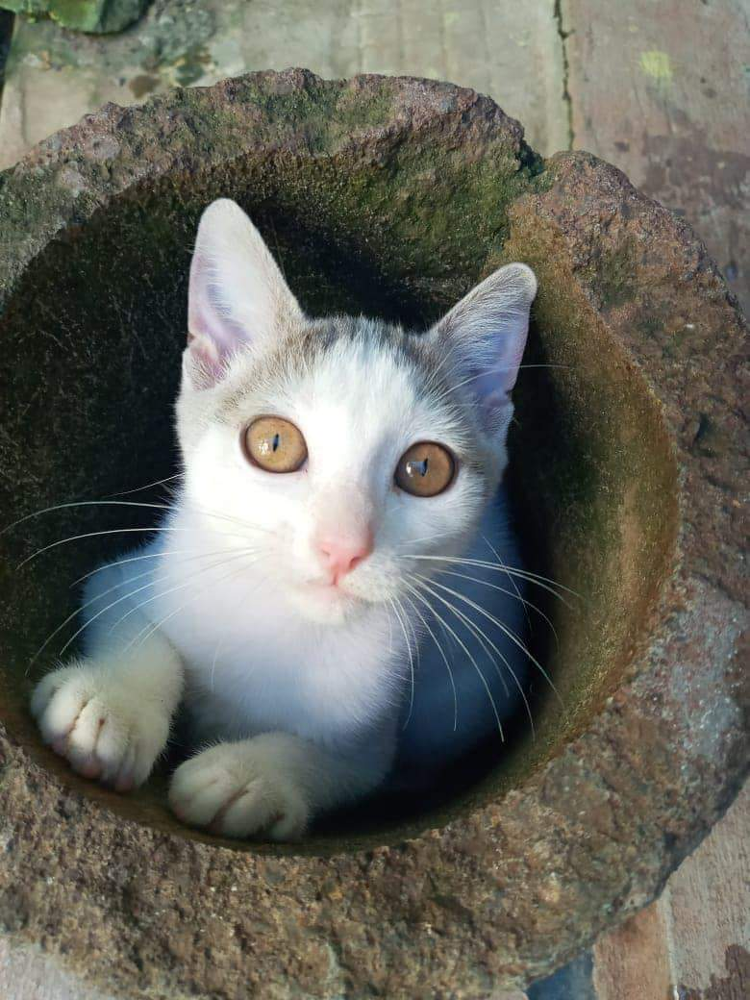
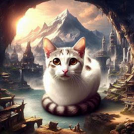

La historia de Linguini
Linguini es una gata de pelaje blanco suave, adornado con manchas marrones que la hacen única. Sus ojos brillantes e intensos, reflejan su curiosidad inagotable y su espíritu aventurero.
En una tranquila aldea cerca de los campos de Cyrodiil, vivía Linguini, una gata que llevaba una vida apacible junto a una familia de campesinos. Desde pequeña, pasaba los días persiguiendo mariposas entre los cultivos y explorando cada rincón del hogar. Sin embargo, a pesar de su vida ordinaria, había algo especial en ella. Linguini era conocida por su astucia. Podía encontrar el camino más corto hacia la despensa, donde siempre había un poco de pescado fresco que los campesinos dejaban caer. Su familia la quería profundamente, y a menudo decían que su presencia traía buena fortuna a sus cosechas.
Un día, mientras exploraba un bosque cercano, Linguini se encontró con un viejo árbol hueco. Intrigada, decidió investigar y, al entrar, descubrió un pequeño altar cubierto de flores silvestres y cristales brillantes. Al tocar uno de los cristales con su pata, una suave luz la envolvió. Desde ese momento, Linguini adquirió un peculiar don: podía entender el lenguaje de los animales del bosque. Con su nuevo poder, Linguini se convirtió en una mediadora entre los animales y los humanos. Avisaba a los campesinos sobre cambios en el clima y ayudaba a resolver disputas entre los animales sobre territorios de caza. La aldea prosperó gracias a sus intervenciones, y su fama se extendió.
A pesar de su creciente popularidad, Linguini nunca se dejó llevar por la vanidad. Continuó viviendo con su familia, disfrutando de los pequeños placeres de la vida: el cálido sol de la tarde, las suaves mantas y el cariño de sus humanos. Con el tiempo, se convirtió en un símbolo de armonía entre la naturaleza y la humanidad, recordando a todos que incluso las criaturas más comunes pueden tener un impacto extraordinario. Linguini entendió que el verdadero poder radica en "la bondad y la conexión con los demás". Su vida ordinaria, llena de pequeños actos de amor y compasión, dejó una huella profunda en su aldea, demostrando que cada uno de nosotros puede ser un héroe en su propia historia.